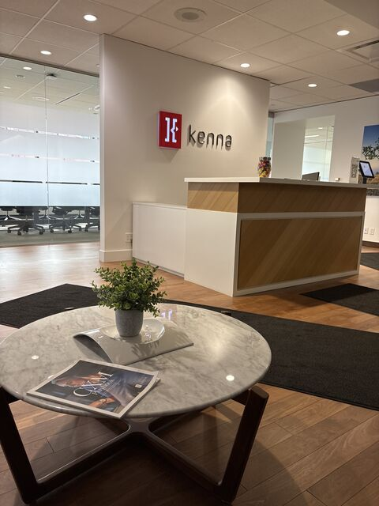

Introduction
Welcome to my Summer 2026 co-op report about my experience as a Web Applications Developer Co-op at Kenna.
In mid December 2025, I began searching for my first co-op opportunity and came across Kenna's Web Applications Developer position. I was immediately drawn to the company's unique intersection of agriculture, marketing, data, and software.
After speaking with former co-op students and current developers, I became even more confident that Kenna would be a great place to learn. They described a welcoming environment, friendly coworkers, and many opportunities to connect through social events.
During my term, I met many amazing people, strengthened both my technical and communication skills, and gained valuable experience working as part of a professional software development team for the first time.
